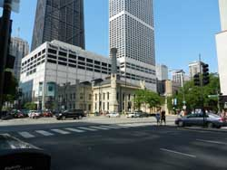
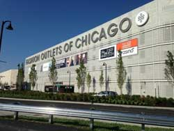

Shopping
Magnificent Mile
The most famous shopping area is called Magnificent Mile. The Mag Mile’s history dates back to 1871. The Magnificent Mile is Chicago’s premier commercial district. Landmarks include the historic Chicago Water Tower, the neo-Gothic Tribune Tower, the terracotta Wrigley Building skyscraper and the 100-story John Hancock Center, which has a rooftop observation deck with fine dining and panoramic city views. In here you can find world’s top luxury designer stores, pet boutiques, different shopping centers like Nordstrom, Neiman Marcus, Macys, sports stores and toy stores.
Outlets
Chicago has three main outlets. Premium Outlets locates at 40 miles west of downtown. There are over 120 brands at this outdoor, suburban shopping center. Fashion Outlets is an indoor outlet center near O'Hare International Airport. There are almost 130 stores including luxury designer stores. Gurnee Mills is the largest outlet in Chicago area, with more than 200 stores. It locates at 45 miles north of downtown.
Chriskindlmarket
Chriskindlmarket is one of best places to go during the Chicago holiday season! The first Chicago’s Christkindlmarket was held in 1995. The German American Chamber of Commerce of the Midwest Inc. was seeking alternative ways to promote bilateral trade between the USA and Germany. The Christkindlmarket Chicago brings German and European tradition with international flair and local charm to Chicago. It is the largest open-air Christmas festival in Chicago. In here you can find European style drinks, foods and different kinds of souvenirs.